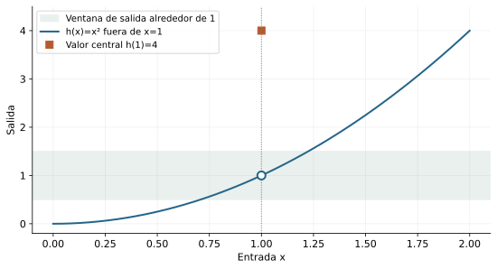
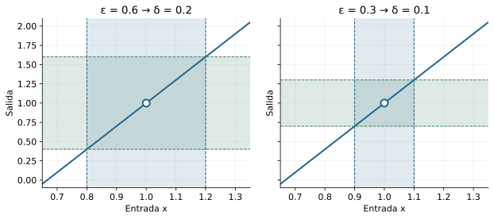
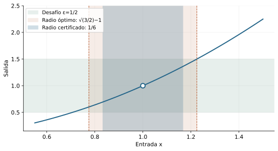
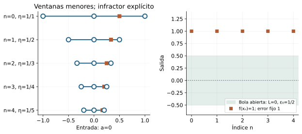
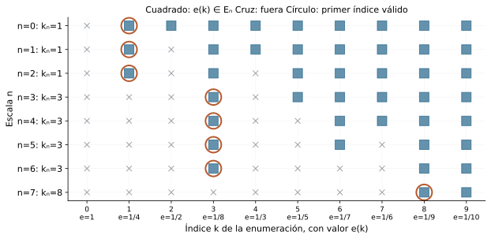
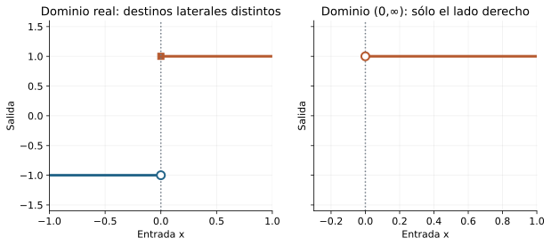
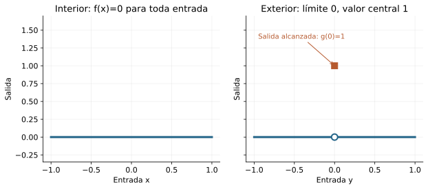

Capítulo 13 — Límites de funciones: control de dos escalas
Índice del libro · Ejercicios de este capítulo
La identidad \(x^2-1=(x-1)(x+1)\) permite relacionar la proximidad de \(x\) a \(1\) con la de \(x^2\) a \(1\). Para convertir esa relación en una prueba hay que dominar el segundo factor y obtener una estimación que sirva para todas las entradas suficientemente próximas. El límite expresa esa posibilidad de responder a cualquier precisión de salida mediante una misma restricción sobre las entradas de una ventana.
Las bolas y la acumulación de C04 dan los conjuntos en que se formula ese control; las imágenes y preimágenes de C12 permiten escribirlo como una inclusión. Al pasar a las sucesiones de C06 aparecerá una diferencia adicional: controlar una ruta ya dada y construir una ruta que detecte un fallo son tareas con obligaciones distintas.
13.1. Aproximarse sin tocar el centro
En C12 encerramos las salidas de una ventana dentro de otra. Para estudiar la aproximación necesitamos poder repetir ese control ante cualquier precisión solicitada: una banda de salidas más estrecha podrá exigir una ventana de entradas más pequeña. El destino que buscamos tampoco tiene por qué coincidir con la evaluación en el centro.
Consideremos \(q(x)=x^2\) cerca de \(1\) y cambiemos únicamente su valor allí: sea \(h(1)=4\) y \(h(x)=x^2\) para \(x\ne1\). Todas las entradas próximas y distintas de \(1\) siguen produciendo las mismas salidas que antes del cambio. La aproximación de esas salidas a \(1\) debe poder estudiarse sin imponer ninguna condición a \(h(1)\); de ahí que la definición excluya el centro de las entradas que somete a control.
Sean \(D\subseteq\mathbb R\) y \(a\in\mathbb R\). La condición de acumulación de C04, que escribimos \(a\in D'\), exige que para cada \(r>0\) exista \(x\in D\) con \(0<|x-a|<r\). La entrada puede variar con el radio. Así cero acumula entradas de \((0,\infty)\): para cualquier \(r>0\), el punto \(r/2\) pertenece al dominio y está a distancia positiva menor que \(r\) de cero, aunque el propio cero no pertenezca al dominio.
Reunimos esas entradas en \(U_D(a,r)=\{x\in D:0<|x-a|<r\}\), la ventana perforada de radio \(r\). La pertenencia a \(D\) autoriza cada evaluación y la desigualdad positiva excluye exactamente \(x=a\). Decir que \(a\in D'\) equivale a afirmar que todas estas ventanas son no vacías. Por el momento sólo necesitamos un testigo para cada radio que se considere, sin reunirlos en una sucesión.
Definición. Para \(f:D\to\mathbb R\), \(a\in D'\) y \(L\in\mathbb R\), decimos que \(f\) tiene límite \(L\) en \(a\) a través de \(D\) si
\[ \forall\varepsilon>0\ \exists\delta>0\ \forall x\in D: \quad 0<|x-a|<\delta\ \Longrightarrow\ |f(x)-L|<\varepsilon. \]
Escribimos \(\lim_{x\to a,\ x\in D}f(x)=L\), abreviando el dominio cuando sea inequívoco. En este capítulo todos los límites funcionales son reales finitos en puntos reales finitos.
Para cada \(\varepsilon>0\), la misma condición pide un \(\delta>0\) con \(f[U_D(a,\delta)]\subseteq B(L,\varepsilon)\). Toda salida de la imagen tiene una entrada testigo en la ventana y, por la definición, dista menos que \(\varepsilon\) de \(L\). Recíprocamente, aplicar la inclusión a la salida de cualquier entrada de la ventana recupera la desigualdad. La equivalencia de C12 permite escribir también \(U_D(a,\delta)\subseteq f^{-1}[B(L,\varepsilon)]\): estamos seleccionando entradas por sus salidas, sin suponer que \(f\) tenga inversa.

La acumulación evita que este control quede vacío. Si \(D=\{a\}\), ninguna entrada cumple \(0<|x-a|<\delta\) y la implicación de la fórmula es verdadera para todos los candidatos \(L\). Bajo nuestra convención no se declara un límite en ese caso. Exigir entradas en todas las ventanas permitirá, además, confrontar dos supuestos destinos mediante una misma evaluación.
El control sólo depende de los valores en alguna ventana perforada. Si \(f,g:D\to\mathbb R\) coinciden en \(U_D(a,r)\), con \(r>0\), y \(f\to L\), fijamos \(\varepsilon>0\) y tomamos \(\delta=\min(r,\delta_f)\), donde \(\delta_f>0\) es válido para \(f\). Cada entrada de la nueva ventana satisface la coincidencia y la estimación, de modo que \(|g(x)-L|=|f(x)-L|<\varepsilon\). Intercambiar \(f\) y \(g\) prueba la equivalencia. Esto permite cambiar valores lejanos o sólo el valor central; añadir o retirar el propio centro tampoco cambia las ventanas perforadas ni su acumulación.
Ejercicios de la sección 13.1
Ejercicio 1. El agujero no decide el destino
Define \(f:\mathbb R\to\mathbb R\) por \(f(x)=2x+5\) si \(x\ne-1\) y \(f(-1)=100\). Prueba desde la definición el límite en \(-1\) y explica qué dato se excluye.
Ver solución del ejercicio 1
El candidato es \(3\). Para \(\varepsilon>0\) tomamos \(\delta=\varepsilon/2\). Si \(0<|x+1|<\delta\), entonces \(x\ne-1\), por lo que \(|f(x)-3|=2|x+1|<\varepsilon\). El punto \(-1\) acumula entradas reales, por ejemplo \(-1+\delta/2\). La definición controla entradas distintas del centro; el valor \(100\) no interviene.
Retorno visual. Véase C13-F01, después del argumento completo: la figura permite reconocer el mecanismo y no sustituye la prueba.
La condición positiva \(0<|x+1|\) garantiza que se aplica la rama afín y no la evaluación excepcional. Restar el candidato tres da \(2x+2=2(x+1)\), por lo que el error se controla exactamente mediante la distancia de entrada. El radio elegido es positivo para toda tolerancia positiva y funciona para todas las entradas de la ventana. El valor cien queda excluido por la definición, no porque sea pequeño o despreciable.
Ejercicio 2. Una pregunta sin entradas
Para \(D=\{0\}\cup[2,3]\) y cualquier \(f:D\to\mathbb R\), analiza la fórmula perforada en \(a=0\). ¿Hay un límite bajo la convención del capítulo?
Ver solución del ejercicio 2
Con \(\delta=1\), no existe \(x\in D\) con \(0<|x|<1\). La implicación sería verdadera para todo \(L\) y toda tolerancia usando ese mismo radio. Pero \(0\) no es punto de acumulación de \(D\), así que no asignamos límite. El fallo no depende de los valores de \(f\): depende de las rutas inexistentes.
El centro cero pertenece al dominio, pero sus demás entradas están al menos a distancia dos. Por eso una ventana suficientemente pequeña no contiene entradas perforadas. La fórmula de precisión no discrimina ningún candidato y sería satisfecha incluso por números incompatibles entre sí. La hipótesis de acumulación evita esta ambigüedad: pertenecer al dominio no basta para preguntar por un límite perforado bajo la convención adoptada.
Ejercicio 3. Dos lenguajes del mismo control
Prueba directamente que \(f[U_D(a,\delta)]\subseteq B(L,\varepsilon)\) equivale a \(U_D(a,\delta)\subseteq f^{-1}[B(L,\varepsilon)]\). Mantén separados valores y conjuntos.
Ver solución del ejercicio 3
Si vale la inclusión de imágenes y \(x\in U_D(a,\delta)\), entonces \(f(x)\in f[U_D(a,\delta)]\subseteq B(L,\varepsilon)\), luego \(x\in f^{-1}[B(L,\varepsilon)]\). A la inversa, si toda entrada de la ventana está en esa preimagen y \(y\) pertenece a la imagen, existe un testigo \(x\) de la ventana con \(y=f(x)\); la pertenencia a la preimagen da \(y\in B(L,\varepsilon)\). \(f(x)\) es un valor; la imagen y la preimagen son conjuntos.
La primera inclusión controla salidas y la segunda selecciona entradas. Para pasar de una a otra se usa la misma evaluación \(f(x)\), sin invertir la función. En la vuelta, una salida de la imagen viene acompañada de una entrada testigo de la ventana. La prueba conserva el recorte por \(D\) y la exclusión del centro. Así ambas formulaciones expresan el mismo control universal, aunque sus conjuntos vivan en espacios distintos.
Ejercicio 4. Igualdad en un germen perforado
Sean \(f,g:D\to\mathbb R\) iguales siempre que \(0<|x-a|<r\), con \(r>0\) y \(a\in D^{\prime}\). Prueba que tienen exactamente los mismos candidatos de límite.
Ver solución del ejercicio 4
Fijemos un candidato \(L\) y supongamos \(f\to L\). Para cada \(\varepsilon>0\), un radio \(\delta_f\) de \(f\) se reúne con \(r\) mediante \(\delta=\min(r,\delta_f)>0\). En la ventana resultante \(g(x)=f(x)\) y \(|g(x)-L|<\varepsilon\). Luego \(g\to L\). Intercambiar \(f,g\) prueba la recíproca para ese mismo candidato. Como \(L\) era arbitrario, los conjuntos de candidatos coinciden.
El candidato se mantiene fijo durante cada dirección de la prueba. El radio mínimo asegura que las funciones coincidan donde se aplica la estimación del límite, y por eso el error puede trasladarse sin cambiarlo. Después invertimos los papeles. No importa que las funciones difieran en el centro o en entradas lejanas: el límite se decide en alguna ventana perforada donde ambas tienen los mismos datos de salida.
Ejercicio 5. Cambiar valores en infinitos puntos lejanos
Construye dos funciones reales que difieran en infinitos puntos, una no acotada globalmente, y que tengan límite cero en cero por coincidencia local. Prueba las afirmaciones.
Ver solución del ejercicio 5
Sea \(f(x)=0\) para todo real, y sea \(g(x)=0\) si \(|x|<1\), \(g(x)=x^2\) si \(|x|\ge1\). Difieren en todos los enteros positivos, un conjunto infinito. \(g(n)=n^2\) no admite cota global por arquimedianidad. Ambas coinciden en la ventana de radio \(1\); para toda tolerancia, ese radio hace el error cero. La información fuera de una ventana fija no determina el límite.
Cada entero positivo produce salida cero en \(f\) y salida \(n^2\) en \(g\), de modo que existen infinitas discrepancias. Para refutar cualquier barrera global propuesta a \(g\), basta escoger un entero cuyo cuadrado la supere. Cerca de cero, en cambio, ambas funciones valen exactamente cero. El mismo radio uno responde a todas las tolerancias. La cantidad de discrepancias no decide el límite; importa su ubicación respecto de las ventanas locales.
13.2. Diseñar una respuesta para toda la ventana
El orden de los cuantificadores fija cómo se elige el radio. Después de declarar \(f,D,a,L\) y recibir \(\varepsilon>0\), debemos producir un \(\delta>0\) que funcione para toda entrada de su ventana. Si lo eligiéramos después de ver \(x\ne a\), podríamos tomar \(\delta<|x-a|\) y excluir precisamente esa entrada: la implicación no habría controlado su salida. La dependencia permitida es de la tolerancia y de los datos fijados.
Para \(f(x)=3x-2\) en \(a=1\), la diferencia respecto del candidato \(L=1\) se reduce a \(|(3x-2)-1|=3|x-1|\). El cálculo indica cuánto hay que reducir la distancia de entrada: para que el resultado sea menor que \(\varepsilon\), basta pedir \(|x-1|<\varepsilon/3\).
Recibida cualquier \(\varepsilon>0\), elegimos por tanto \(\delta=\varepsilon/3>0\). Para una entrada arbitraria con \(0<|x-1|<\delta\) obtenemos \(|f(x)-1|=3|x-1|<3\delta=\varepsilon\). La elección se hizo antes de esa entrada y la estimación se verifica en toda la ventana.

La misma identidad para \(f(x)=mx+c\) es \(|f(x)-(ma+c)|=|m||x-a|\). Si \(m\ne0\), sirve \(\delta=\varepsilon/|m|\); si \(m=0\), el error es cero y podemos usar cualquier radio positivo. En cambio, para una afín no constante en la recta, un solo radio no responde a todas las tolerancias: fijado \(\delta>0\), la entrada \(a+\delta/2\) tiene error \(|m|\delta/2>0\), que incumple una tolerancia menor. El radio puede adaptarse a la precisión sin depender de la entrada.
En el cuadrado, \(|x^2-a^2|=|x-a||x+a|\) deja un factor variable que debemos acotar antes de diseñar la precisión. La restricción auxiliar \(|x-a|<1\) da \(|x+a|\le|x-a|+2|a|<1+2|a|=:C\). Esta constante depende del centro y es positiva incluso si \(a=0\). El error queda así dominado por una constante fija multiplicada por la distancia que podemos reducir.
Dado \(\varepsilon>0\), tomamos \(\delta=\min(1,\varepsilon/C)>0\). Si \(0<|x-a|<\delta\), la primera restricción acota \(|x+a|\) y la segunda ajusta el error: \(|x^2-a^2|<C|x-a|<C\delta\le\varepsilon\). La primera desigualdad es estricta porque \(|x-a|>0\). El mínimo conserva simultáneamente las dos condiciones necesarias.

Cualquier reducción positiva de un radio válido vuelve a ser válida, pues sólo retira entradas ya controladas. En \(a=1\) la elección \(\min(1,\varepsilon/3)\) puede ser menor que el mayor radio posible, como muestra la figura. La existencia del límite sólo requiere la elección que acabamos de verificar; afirmar optimalidad exige además descartar todos los radios mayores, tarea que se desarrolla en el ejercicio 13.8.
Para \(r(x)=1/x\), con dominio \(\mathbb R\setminus\{0\}\) y \(a\ne0\), el factor variable aparece en el denominador. Si \(|x-a|<|a|/2\), la triangular inversa da \(|x|\ge|a|-|x-a|>|a|/2>0\). Todas esas entradas evitan cero con una separación común, y, para \(x\ne a\),
\[ \left|\frac1x-\frac1a\right| =\frac{|x-a|}{|x||a|} <\frac{2|x-a|}{|a|^2}. \]
Elegimos \(\delta=\min(|a|/2,\varepsilon|a|^2/2)>0\). Para cualquier entrada de su ventana perforada, la barrera anterior permite invertir el denominador y la restricción de precisión da \(2|x-a|/|a|^2<\varepsilon\). Queda probado \(\lim_{x\to a}1/x=1/a\). Saber sólo que cada denominador es distinto de cero no habría proporcionado la cota uniforme que utiliza esta estimación.
Ejercicios de la sección 13.2
Ejercicio 6. Diseñar el radio de una afín decreciente
Prueba desde la definición que \(-4x+7\) tiene límite \(-1\) en \(a=2\). Determina el mayor radio simétrico válido para un desafío \(\varepsilon>0\).
Ver solución del ejercicio 6
El error es \(4|x-2|\). \(\delta=\varepsilon/4\) sirve porque la entrada satisface una desigualdad estricta. Si \(\delta>\varepsilon/4\), tomamos \(t=(\delta+\varepsilon/4)/2\) y \(x=2+t\). Entonces \(0<t<\delta\) y \(4t>\varepsilon\), infracción. Por tanto el radio dado es el mayor. El signo de la pendiente invierte orden, pero el error depende de su magnitud.
Retorno visual. Véase C13-F02, después del argumento completo: la figura permite reconocer el mecanismo y no sustituye la prueba.
Como la magnitud de la pendiente es cuatro, el error de salida es exactamente cuatro veces el de entrada. El radio \(\varepsilon/4\) sirve incluso en el caso frontera, porque las entradas están a distancia estrictamente menor que el radio. Para cualquier radio mayor, la distancia \(t\) elegida entre ambos umbrales produce un infractor dentro de la ventana. Estos dos argumentos demuestran validez y maximalidad, que son obligaciones diferentes.
Ejercicio 7. Un radio conservador para un cuadrado
Prueba desde la definición \(x^2\to4\) en \(2\) y da un radio explícito que no necesite resolver una desigualdad cuadrática.
Ver solución del ejercicio 7
Para \(|x-2|<1\), \(|x+2|\le|x-2|+4<5\). Dado \(\varepsilon>0\), tomamos \(\delta=\min(1,\varepsilon/5)\). Entonces \(|x^2-4|=|x-2||x+2|<5|x-2|<5\delta\le\varepsilon\). El radio auxiliar elimina el factor variable.
La factorización introduce un factor variable \(x+2\). Antes de ajustar la precisión, imponemos una ventana de radio uno para acotar su magnitud por cinco. Luego la condición \(|x-2|<\varepsilon/5\) hace pequeño el producto. El mínimo conserva ambas condiciones a la vez. No se afirma que sea el mayor radio, ni se necesita resolver la desigualdad exacta para demostrar existencia del límite.
Ejercicio 8. Radio óptimo del cuadrado en uno
Para \(0<\varepsilon<1\), demuestra que el mayor radio simétrico para \(|x^2-1|<\varepsilon\) alrededor de \(1\) es \(\delta_*=\sqrt{1+\varepsilon}-1\).
Ver solución del ejercicio 8
La componente de entradas positivas que satisface el error es \((\sqrt{1-\varepsilon},\sqrt{1+\varepsilon})\). Los márgenes desde \(1\) son \(1-\sqrt{1-\varepsilon}\) y \(\sqrt{1+\varepsilon}-1\). El segundo es menor: racionalizar da \(\varepsilon/(1+\sqrt{1-\varepsilon})>\varepsilon/(1+\sqrt{1+\varepsilon})\). Así el intervalo simétrico de radio \(\delta_*\) queda dentro de esa componente, pues su extremo inferior supera \(\sqrt{1-\varepsilon}\). Si un radio es mayor, incluye \(x=\sqrt{1+\varepsilon}\), distinto de \(1\), cuyo error es exactamente \(\varepsilon\), infracción.
Retorno visual. Véase C13-F03, después del argumento completo: la figura permite reconocer el mecanismo y no sustituye la prueba.
Alrededor de uno, con \(0<\varepsilon<1\), las entradas admisibles positivas están entre las dos raíces indicadas. El lado derecho ofrece el margen menor, por lo que determina la mayor ventana simétrica. El radio óptimo aún funciona porque su extremo superior queda fuera de la bola abierta de entradas. Cualquier aumento lo incluye y produce error exactamente igual a la tolerancia, que ya infringe el requisito estricto. Así la frontera permite acreditar la optimalidad.
Ejercicio 9. Reparar una respuesta que depende de la entrada
Un borrador afirma: «Para probar \(x^2\to1\), tomo \(\delta=\varepsilon/(|x+1|+1)\); así el error será pequeño». Localiza el defecto y escribe una prueba válida.
Ver solución del ejercicio 9
La expresión de \(\delta\) utiliza el \(x\) que debía verificarse después de fijar el radio. No produce una respuesta única para toda la ventana. La reparación fija primero \(|x-1|<1\), que da \(|x+1|<3\), y elige \(\delta=\min(1,\varepsilon/3)\). Para toda entrada de esa ventana, \(|x^2-1|<3|x-1|<\varepsilon\). La fórmula defectuosa queda como objeto de diagnóstico, no como prueba.
La respuesta debe fijarse antes de considerar la entrada arbitraria. El borrador usa precisamente esa entrada para definir el tamaño de su ventana, por lo que no prueba un radio común. La reparación sustituye el factor variable por una constante obtenida en una ventana auxiliar. Con \(|x-1|<1\), \(|x+1|<3\), y el mínimo propuesto hace \(|x^2-1|=|x-1||x+1|<\varepsilon\) para toda la ventana.
Ejercicio 10. Proteger un recíproco desplazado
Prueba desde la definición que \(1/(x-3)\) tiene límite \(-1/2\) en \(a=1\).
Ver solución del ejercicio 10
Si \(|x-1|<1\), entonces \(|x-3|\ge2-|x-1|>1\); las entradas no alcanzan \(3\). El error es \(|1/(x-3)+1/2|=|x-1|/(2|x-3|)<|x-1|/2\). Tomamos \(\delta=\min(1,2\varepsilon)\). Para toda entrada del dominio dentro de esa ventana, el error es menor que \(\delta/2\le\varepsilon\).
El dominio natural excluye tres. La ventana auxiliar alrededor de uno permanece separada de ese punto porque \(|x-3|>1\). Después de reunir los cocientes, el numerador del error es \(x-1\) y el denominador tiene magnitud mayor que dos. El radio de precisión \(2\varepsilon\) controla ese error y el mínimo conserva la protección del denominador. La prueba declara por qué cada evaluación está permitida antes de aplicar la estimación.
13.3. Un destino, barreras locales y orden
Dos candidatos distintos podrían exigir radios diferentes. Para compararlos necesitamos reducirnos a la intersección de sus ventanas y encontrar allí una entrada: ésa es la función que cumplirá la acumulación en la prueba de unicidad.
Teorema. Si \(a\in D'\) y \(f:D\to\mathbb R\) tiene límites \(L\) y \(M\) en \(a\), entonces \(L=M\).
Supongamos \(L\ne M\) y pongamos \(d=|L-M|>0\). Para tolerancia \(d/3\), los dos límites entregan radios \(\delta_L,\delta_M>0\). Su mínimo sigue siendo positivo y, como \(a\in D'\), existe \(x\in D\) con \(0<|x-a|<\min(\delta_L,\delta_M)\). Ambas estimaciones se aplican a esa misma salida. La triangular da entonces \(d\le|L-f(x)|+|f(x)-M|<2d/3\), contradicción. Sin una entrada común no habríamos podido enlazar las dos cotas.
Una sola tolerancia también produce una consecuencia útil. Si \(f\to L\), la tolerancia \(1\) proporciona un \(r>0\) con \(|f(x)-L|<1\) en \(U_D(a,r)\), y allí \(|f(x)|\le|f(x)-L|+|L|<|L|+1\). Es una acotación local perforada. El cuadrado tiene límite cero en cero y crece sin cota en toda la recta, por lo que esta conclusión sólo se extiende a las entradas de la ventana obtenida.
Si además \(a\in D\), la barrera \(\max(|L|+1,|f(a)|+1)\) incorpora su valor y acota también las entradas no perforadas de esa ventana. El límite no había estimado \(f(a)\); lo hemos añadido por separado como un único valor real.
Supongamos \(f,g:D\to\mathbb R\), \(f\to L\), \(g\to M\) y \(f(x)\le g(x)\) en alguna ventana perforada. Si \(L>M\), tomamos \(\varepsilon=(L-M)/3\) y el mínimo de los radios de ambos límites y del radio de orden. La acumulación da una entrada común, donde \(f(x)>L-\varepsilon>M+\varepsilon>g(x)\) contradice la desigualdad supuesta. Así \(L\le M\). La desigualdad puede perder su carácter estricto al pasar al límite: en \((0,\infty)\) tenemos \(0<x\), mientras la función cero y la identidad tienden ambas a cero en cero.
Teorema del encierro. Si \(p(x)\le f(x)\le q(x)\) cerca de \(a\), \(p\to L\) y \(q\to L\), entonces \(f\to L\). Para \(\varepsilon>0\), reúna radios para \(p,q\) y para el orden. Allí \(L-\varepsilon<p(x)\le f(x)\le q(x)<L+\varepsilon\), luego \(|f(x)-L|<\varepsilon\). No hemos supuesto existencia previa del límite de \(f\); acabamos de probarla.
Sea ahora \(b:D\to\mathbb R\), con \(0\in D'\) y \(|b(x)|\le K\) en \(U_D(0,r)\) para ciertos \(r>0\), \(K\ge0\). En \(h(x)=xb(x)\), la estimación \(|h(x)|\le K|x|\) permite tomar \(\delta=\min(r,\varepsilon/K)\) cuando \(K>0\). Si \(K=0\), la función \(b\) es cero en esa ventana y el error ya es nulo, sin dividir por \(K\). No hace falta que \(b\) tenga límite: puede valer uno en los racionales y menos uno en los irracionales. La cota controla el tamaño de su oscilación y el factor \(x\) hace pequeño todo el producto.
Ejercicios de la sección 13.3
Ejercicio 11. Una cota que incluye el centro
Si \(a\in D\), \(a\in D^{\prime}\) y \(f\to L\), prueba que \(f\) está acotada en alguna ventana no perforada \(D\cap B(a,r)\), sin suponer \(f(a)=L\).
Ver solución del ejercicio 11
La tolerancia \(1\) entrega \(r>0\) con \(|f(x)|<|L|+1\) para toda entrada no central de la ventana. Elegimos \(K=\max(|L|+1,|f(a)|+1)\). En el centro, \(|f(a)|<K\); fuera del centro, la cota previa da \(|f(x)|<K\). La unión de ambos casos prueba acotación. Sólo se añadió un valor finito a una cota local.
La definición da una barrera sólo para las entradas no centrales. Para ampliar a la ventana completa hay que añadir el valor particular \(f(a)\), que es un real finito porque \(a\in D\). Tomar el máximo de ambas barreras cubre los dos casos. No se necesita que ese valor central coincida con \(L\): una evaluación excepcional puede estar lejos del destino y aun así incluirse en una cota local finita.
Ejercicio 12. Encierro sin existencia supuesta
Sea \(f:\mathbb R\to\mathbb R\) y supongamos \(-x^2\le f(x)\le2x^2\) para \(0<|x|<1\). Prueba \(f\to0\) sin usar reglas algebraicas posteriores.
Ver solución del ejercicio 12
Las cotas implican \(|f(x)|\le2x^2\) en esa ventana. Para \(\varepsilon>0\) tomamos \(\delta=\min(1,\sqrt{\varepsilon/2})>0\). Si \(0<|x|<\delta\), entonces \(|f(x)|\le2x^2<2\delta^2\le\varepsilon\). No se supuso que \(f\) tuviera límite: el control universal lo establece. Las raíces positivas pertenecen al álgebra real elemental.
Si \(f(x)\) es no negativo, la cota superior da \(|f(x)|\le2x^2\); si es negativo, la inferior da \(|f(x)|\le x^2\le2x^2\). Por eso la estimación absoluta es válida en ambos casos. El radio elegido permanece en la región de encierro y hace \(2x^2<\varepsilon\). La prueba parte de desigualdades sobre valores y construye directamente el límite, sin presuponer un destino de \(f\).
Ejercicio 13. Oscilar y aun así converger
Sea \(b(x)=1\) para \(x\) racional y \(b(x)=-1\) para \(x\) irracional. Prueba que \(h(x)=xb(x)\) tiene límite cero en cero, sin decidir si \(b\) tiene límite.
Ver solución del ejercicio 13
Para toda entrada, \(|b(x)|=1\) y \(|h(x)|=|x|\). Dado \(\varepsilon>0\) basta \(\delta=\varepsilon\). Si \(0<|x|<\delta\), el error de \(h\) es menor que \(\varepsilon\). El control procede de la magnitud del factor, no de la existencia de su límite.
La magnitud de \(b(x)\) es uno en cualquiera de sus dos ramas, así que no hace falta conocer su comportamiento de límite. La identidad \(|xb(x)|=|x|\) reduce el control de salida al de entrada. La elección \(\delta=\varepsilon\) funciona uniformemente para entradas racionales e irracionales. Las oscilaciones del signo pueden mantenerse, mientras el tamaño de las salidas se aproxima a cero.
Ejercicio 14. El orden no conserva separación estricta
Construye \(f<g\) en una ventana perforada con el mismo límite, y prueba que en general sí se conserva el orden no estricto de límites.
Ver solución del ejercicio 14
En \((0,\infty)\), \(f(x)=0\) y \(g(x)=x\) satisfacen \(f<g\) y ambas tienen límite cero: para la identidad sirve \(\delta=\varepsilon\). Para la afirmación general, si \(f\to L\), \(g\to M\) y \(L>M\), pedimos errores menores que \((L-M)/3\), reunimos radios con la ventana de orden y obtenemos una entrada por acumulación. Allí \(f>L-(L-M)/3>M+(L-M)/3>g\), contradicción. Luego \(L\le M\).
El ejemplo demuestra que una diferencia positiva entre funciones puede desaparecer en el límite. Para el resultado general, suponemos lo contrario, \(L>M\), y usamos una tolerancia menor que la separación de los destinos. Los radios y la ventana de orden deben reunirse para que las tres condiciones valgan en la misma entrada. La acumulación proporciona esa entrada. Las cotas colocarían a \(f\) por encima de \(g\), contradiciendo su orden local.
Ejercicio 15. Dos destinos no caben en una misma ventana
Reconstruye la unicidad usando tolerancia \(|L-M|/2\) en vez de un tercio. Explica por qué las desigualdades estrictas siguen bastando.
Ver solución del ejercicio 15
Si \(L\ne M\), \(d=|L-M|>0\). Ambos contratos para \(\varepsilon=d/2\) dan radios positivos. Acumulación proporciona una entrada en su mínimo. La triangular da \(d\le|L-f(x)|+|f(x)-M|<d/2+d/2=d\), contradicción. La igualdad en la suma de tolerancias es admisible porque los errores individuales son estrictamente menores.
Cada error es estrictamente menor que la mitad de la distancia entre candidatos. Al sumarlos obtenemos una cantidad estrictamente menor que la distancia completa, aunque los dos presupuestos sumen exactamente esa distancia. Por eso no se exige un margen de un tercio en esta variante. La entrada común sigue siendo indispensable y viene de la acumulación; sin ella, los controles podrían ser vacíos y la triangular no podría aplicarse a una salida real.
13.4. Negar un candidato y construir infracciones
Un candidato falla cuando alguna precisión queda fuera del alcance de todas las ventanas. Aunque reduzcamos el radio, deberá persistir una entrada cuya salida incumpla esa misma precisión. La entrada puede cambiar al reducir la ventana; la tolerancia que acredita el fracaso permanece fija.
Con los datos \(f,D,a,L\) fijados y \(a\in D'\), negar el contrato equivale a
\[ \exists\varepsilon_0>0\ \forall\delta>0\ \exists x\in D: \quad 0<|x-a|<\delta,\qquad |f(x)-L|\ge\varepsilon_0. \]
Para cada radio propuesto se busca un infractor, que puede depender de él y del candidato fijado. La negación del error estricto incluye la frontera: si \(|f(x)-L|=\varepsilon_0\), la salida ya está fuera de \(B(L,\varepsilon_0)\). Por eso se exige \(\ge\varepsilon_0\) y no solamente \(>\varepsilon_0\).
Refutar un candidato deja abierta la existencia de otros: la función constante uno incumple el candidato cero y tiene límite uno. Para demostrar que no existe ningún límite habrá que descartar cada \(L\in\mathbb R\) o encontrar consecuencias incompatibles de cualquier supuesto límite.
Podemos registrar los fallos en escalas numeradas. Para \(n\in\mathbb N=\{0,1,\ldots\}\), ponemos \(\eta_n=1/(n+1)\), de modo que todos los términos están definidos y \(\eta_n\to0\) por C06. Un candidato falla si y sólo si existe \(\varepsilon_0>0\) tal que todos los conjuntos
\[ E_n=\{x\in D:0<|x-a|<\eta_n,\ |f(x)-L|\ge\varepsilon_0\} \]
son no vacíos. La negación completa lo implica al proponer el radio \(\eta_n\). Para la vuelta, dado cualquier \(\delta>0\), la arquimedianidad permite tomar un índice con \(\eta_n<\delta\). Un testigo del correspondiente \(E_n\) es entonces una entrada de la ventana de radio \(\delta\) con error al menos \(\varepsilon_0\), como se requería. Este argumento usa un solo conjunto de infractores después de recibir el radio.
Una sucesión de infractores exigiría algo más: una función \(n\mapsto x_n\) con \(x_n\in E_n\) simultáneamente para todo \(n\). La afirmación \(\forall n\,\exists x\in E_n\) no especifica esa función. Para pasar de la familia de conjuntos a una ruta utilizaremos una regla de selección dada o una hipótesis adicional, que habrá que declarar.

Sea \(s(x)=-1\) para \(x<0\) y \(s(x)=1\) para \(x\ge0\), en dominio real. Para cualquier \(L\), al menos una de las distancias \(|-1-L|\), \(|1-L|\) es \(\ge1\): si ambas fueran menores que \(1\), la triangular daría \(2<2\).
Fijado \(L\), escogemos una de las dos ramas cuya distancia a él sea al menos uno. Para cada \(\delta>0\) tomamos \(x=-\delta/2\) si la rama es negativa y \(x=\delta/2\) si es positiva. En ambos casos \(0<|x|<\delta\) y \(|s(x)-L|\ge1\). La tolerancia uno sirve a cualquier escala: la rama se fija según \(L\) y sólo la entrada se adapta al radio. Esto descarta todos los candidatos reales.
También \(r(x)=1/x\) en \((0,\infty)\) carece de límite real finito en cero. Dados \(L\in\mathbb R\) y \(\delta>0\), ponemos \(x=\min(\delta/2,1/[2(|L|+1)])\). Ambos términos son positivos, así que \(0<x\le\delta/2<\delta\), mientras \(1/x\ge2(|L|+1)\). Por la triangular inversa, \(|1/x-L|\ge1/x-|L|\ge|L|+2>1\). La misma tolerancia uno refuta cada destino finito; esta conclusión no introduce una definición de límite infinito.
Ejercicios de la sección 13.4
Ejercicio 16. La frontera ya es infracción
Para \(f(x)=x\) en cero y candidato \(L=1\), da una tolerancia fija y un infractor explícito para cada radio.
Ver solución del ejercicio 16
Tomemos \(\varepsilon_0=1\). Dado \(\delta>0\), sea \(x=-\delta/2\). Entonces \(0<|x|<\delta\) y \(|x-1|=1+\delta/2>1\). El candidato se refuta aunque la función sí tiene otro límite, cero.
Retorno visual. Véase C13-F04, después del argumento completo: la figura permite reconocer el mecanismo y no sustituye la prueba.
El candidato uno queda a distancia \(1+\delta/2\) de la salida negativa elegida. La tolerancia uno se fija antes del radio y todos los radios tienen un infractor no central. Esto refuta el candidato uno, mientras la función identidad tiene límite cero por el control \(\delta=\varepsilon\). Para ilustrar específicamente la frontera también puede usarse tolerancia \(1/2\) y una entrada positiva suficientemente pequeña, pero el infractor negativo ya prueba la refutación pedida.
Ejercicio 17. Una escala basta para todos los radios
Sean \(r_n>0\) tales que para cada \(\delta>0\) existe \(n\) con \(r_n<\delta\). Prueba que la negación del límite equivale a no vaciedad de los infractores en cada escala \(r_n\), para una misma tolerancia.
Ver solución del ejercicio 17
La negación completa aplicada a \(\delta=r_n\) produce un infractor para cada \(n\) con la misma \(\varepsilon_0\). A la inversa, dados conjuntos no vacíos y un radio cualquiera \(\delta\), la propiedad de la escala da \(n\) con \(r_n<\delta\). Un único punto infractor de ese conjunto también está en la ventana de radio \(\delta\) y conserva el error \(\ge\varepsilon_0\). No hace falta escoger todos los puntos a la vez.
No se exige que la escala sea monótona: sólo que contenga algún radio menor que cualquier radio propuesto. En la dirección inversa escogemos ese índice y usamos un testigo del conjunto correspondiente. La tolerancia debe ser la misma en todos los conjuntos, para que la infracción persista al cambiar de escala. La prueba refuta el candidato sin construir todavía una función que elija testigos para todos los índices simultáneamente.
Ejercicio 18. Todos los reales quedan descartados
Prueba directamente, sin sucesiones, que \(f(x)=1/|x|\) en \(\mathbb R\setminus\{0\}\) no tiene límite real finito en cero.
Ver solución del ejercicio 18
Fijemos cualquier \(L\). Para tolerancia \(1\) y cualquier \(\delta>0\), elegimos \(x=\min(\delta/2,1/[2(|L|+1)])>0\). Está en el dominio y en la ventana perforada; \(1/|x|\ge2(|L|+1)\) implica \(|f(x)-L|\ge f(x)-|L|>1\). Cada candidato tiene infractores arbitrariamente próximos, por lo que no existe límite real finito.
El candidato real \(L\) es arbitrario, y la tolerancia uno sirve para todos. El segundo término del mínimo hace que la salida sea mayor que la magnitud de \(L\) con un margen superior a uno; el primero sitúa la entrada dentro de cualquier ventana propuesta. Se verifican dominio, perforación y error grande. La conclusión descarta todos los límites reales finitos, sin introducir aquí una definición de límite infinito.
Ejercicio 19. Cada entrada favorable no es un límite
Prueba que la condición «para todo \(\varepsilon,\delta>0\) existe \(x\) con \(0<|x|<\delta\) y \(|f(x)|<\varepsilon\)» no garantiza \(f\to0\).
Ver solución del ejercicio 19
Sea \(f(x)=0\) para \(x>0\), \(f(x)=1\) para \(x\le0\). Dadas \(\varepsilon,\delta>0\), el punto \(\delta/2\) cumple la condición favorable. Pero el punto \(-\delta/2\) tiene error \(1\) para cada radio, por lo que la tolerancia \(\varepsilon_0=1/2\) refuta \(L=0\). La condición débil elige una entrada; el límite debe controlar todas.
En cada ventana hay una entrada positiva que entrega salida cero, por lo que el enunciado débil encuentra un testigo favorable para cualquier precisión. En la misma ventana hay también una entrada negativa con salida uno. El límite exige controlar ambas, no sólo seleccionar la que conviene. La tolerancia fija \(1/2\) y los infractores negativos muestran la diferencia entre existencia de un punto bueno y control universal de la ventana.
Ejercicio 20. Fallo sin magnitud infinita
Construye una función globalmente acotada sin límite en cero y refútala para todo candidato mediante una tolerancia fija.
Ver solución del ejercicio 20
El salto con salidas \(-1\) y \(1\) está acotado por \(1\). Para cada candidato \(L\) una de las distancias a esas dos salidas es \(\ge1\), por triangular. Fijado ese signo, el punto con ese signo y magnitud \(\delta/2\) infringe el error para cualquier radio, con tolerancia \(1\). La falta de límite puede deberse a incompatibilidad de destinos sin que los valores sean grandes.
Para cada candidato, la distancia entre las dos salidas obliga a que una de ellas quede separada de él al menos por uno. Elegimos esa rama una vez fijado el candidato. Después cada radio proporciona una entrada de la rama con magnitud \(\delta/2\). Así se verifican todos los cuantificadores de la refutación. La función mantiene magnitudes iguales a uno, de modo que la inexistencia del límite no puede atribuirse a falta de acotación.
13.5. Lo que detectan las sucesiones
Una ruta numerada sólo visita algunas entradas del dominio. Si existe límite funcional, las estimaciones de una ventana se aplicarán a todos los términos suficientemente tardíos de cualquier ruta que se acerque al centro sin alcanzarlo. Esta consecuencia permite detectar fallos mediante sucesiones explícitas.
Llamamos admisible a una sucesión \((x_n)\) con \(x_n\in D\setminus\{a\}\) para todo índice y \(x_n\to a\). La pertenencia al dominio hace que \(f(x_n)\) esté definido; la evitación del centro permite usar el límite perforado. La convergencia de las entradas será la que sitúe cada cola suficientemente tardía dentro del radio requerido.
Proposición. Si \(f\to L\) en \(a\), entonces \(f(x_n)\to L\) para toda sucesión admisible.
Fijemos una sucesión admisible y \(\varepsilon>0\). El límite funcional proporciona \(\delta>0\) y la convergencia \(x_n\to a\) proporciona después \(N\) con \(|x_n-a|<\delta\) para \(n\ge N\). Como todos esos términos están en \(D\) y son distintos de \(a\), cumplen el antecedente completo del control funcional. Se sigue \(|f(x_n)-L|<\varepsilon\) en toda la cola, que es precisamente la convergencia de las imágenes. El argumento trabaja sobre la sucesión dada y no selecciona otra.
La sucesión constante \(x_n=a\) mostraría por qué hay que excluir el centro: si \(f(a)\) existe, sus imágenes son constantemente \(f(a)\), que puede diferir de \(L\); si no existe, ni siquiera forman una sucesión evaluable. Puede permitirse un prefijo finito de términos centrales cuando todas las evaluaciones estén definidas y la cola los evite. Basta entonces tomar el máximo entre el corte que elimina esos términos y el corte que entra en el radio \(\delta\).
Para obtener la recíproca partimos de un fallo y de los conjuntos no vacíos \(E_n\) de §13.4. Una ruta con \(x_n\in E_n\) se acercaría a \(a\) manteniendo sus imágenes a distancia al menos \(\varepsilon_0\) de \(L\). La cuestión pendiente es definir todos sus términos. Una enumeración del dominio ofrece una regla mediante el buen orden de los naturales.
Teorema para un dominio enumerado. Si está dada una sobreyección \(e:\mathbb N\to D\), entonces \(f\to L\) si y sólo si todas las sucesiones admisibles tienen imágenes que convergen a \(L\).
La dirección directa está probada. Para la inversa, supongamos que falla el límite y fijemos la tolerancia \(\varepsilon_0\) y los \(E_n\). La sobreyectividad asegura que \(I_n=\{k\in\mathbb N:e(k)\in E_n\}\) es no vacío. Tiene por tanto un mínimo natural único, y las fórmulas \(k_n=\min I_n\), \(x_n=e(k_n)\) definen la ruta. Como \(0<|x_n-a|<1/(n+1)\), tenemos \(x_n\to a\); como \(|f(x_n)-L|\ge\varepsilon_0\) para todo índice, sus imágenes no convergen a \(L\). Esto contradice la hipótesis sobre todas las rutas admisibles.
El mínimo se toma entre índices naturales. Un conjunto real no vacío como \((0,1)\) puede carecer de mínimo, por lo que no podríamos sustituir la regla por \(x_n=\min E_n\). Tampoco se exige que los \(k_n\) crezcan estrictamente: la ruta no tiene por qué ser una subsucesión de la enumeración. La cota de distancias basta para la convergencia. Aunque haya repeticiones, un punto fijo \(t\ne a\) queda excluido desde que \(1/(n+1)<|t-a|\), y no puede reaparecer arbitrariamente tarde.

Teorema condicional para dominios arbitrarios. Bajo el principio de elección numerable para subconjuntos de reales, \(\mathrm{CC}(\mathbb R)\), vale la misma equivalencia para todo \(D\subseteq\mathbb R\). Este principio dice que cada familia numerable de subconjuntos reales no vacíos admite un selector. Aplicarlo a los \(E_n\) produce \(x_n\in E_n\); las dos desigualdades anteriores completan la contradicción. Es exactamente el paso adicional. No lo necesitamos para la dirección directa ni para el caso enumerado, y no lo incorporamos silenciosamente como axioma.
En el salto de §13.4 ya disponemos de las fórmulas \(u_n=-1/(n+1)\) y \(v_n=1/(n+1)\). Ambas rutas son admisibles en cero y sus imágenes son constantemente \(-1\) y \(1\). Si hubiera un límite funcional \(L\), la dirección directa y la unicidad del límite de sucesiones de C06 obligarían a \(L=-1\) y \(L=1\). Las rutas están definidas antes de invocar el argumento, por lo que esta refutación no usa elección numerable ni la recíproca condicional.
Una ruta que incumpla la convergencia hacia \(L\) refuta ese candidato; dos rutas con destinos distintos descartan cualquier límite funcional. Para probar existencia con información secuencial se necesita, en cambio, controlar todas las rutas admisibles y justificar la recíproca bajo las hipótesis que acabamos de distinguir.
Ejercicios de la sección 13.5
Ejercicio 21. Una ruta favorable engaña
Sea \(f(x)=0\) si \(x=1/(n+1)\) para algún \(n\in\mathbb N\) y \(f(x)=1\) en las demás entradas reales. Encuentra dos rutas admisibles en cero que descarten un límite.
Ver solución del ejercicio 21
La ruta \(u_n=1/(n+1)\) tiene imágenes cero. La ruta \(v_n=-1/(n+1)\) tiene imágenes uno, pues nunca coincide con una entrada positiva de la primera ruta. Ambas evitan cero y convergen a él por C06. Si hubiese límite \(L\), la dirección directa y la unicidad secuencial darían a la vez \(L=0\) y \(L=1\), contradicción.
Las dos rutas pertenecen al dominio real, nunca alcanzan cero y sus magnitudes \(1/(n+1)\) tienden a cero. La primera coincide por construcción con las entradas de valor cero; la segunda es negativa y por eso siempre produce uno. La dirección directa del criterio secuencial obligaría a ambas imágenes a tener el mismo destino si existiera un límite funcional. Basta esta contradicción y no se utiliza elección numerable, porque las rutas están dadas por fórmulas.
Ejercicio 22. Un prefijo puede tocar el centro
Supón \(f\to L\) en \(a\), \(x_n\in D\) y \(x_n\to a\), con \(x_n\ne a\) para todos los índices a partir de cierto \(N_0\). Prueba \(f(x_n)\to L\) si \(f\) está definida en todos los términos.
Ver solución del ejercicio 22
Dado \(\varepsilon>0\), el límite funcional ofrece \(\delta\). La convergencia de \(x_n\) da \(N_1\) que asegura \(|x_n-a|<\delta\). Para \(n\ge\max(N_0,N_1)\) también hay distancia positiva, y la implicación funcional produce error menor que \(\varepsilon\). Los términos anteriores no afectan la convergencia.
El corte máximo reúne aproximación al centro y evitación eventual del centro. A partir de él, cada término satisface todas las condiciones del límite perforado. Los términos iniciales pueden evaluar \(f(a)\), pero sólo forman un prefijo finito y no alteran la convergencia de las imágenes. La hipótesis de que todas las evaluaciones estén definidas asegura que la sucesión de imágenes sea un objeto completo, no una lista con términos ausentes.
Ejercicio 23. El mínimo vive en los índices
En un dominio enumerado, justifica la existencia del selector \(x_n=e(\min I_n)\) y explica por qué no se toma el mínimo de \(E_n\subseteq\mathbb R\).
Ver solución del ejercicio 23
Por sobreyectividad y no vaciedad de \(E_n\), el conjunto \(I_n=\{k:e(k)\in E_n\}\) contiene algún natural. El buen orden da un mínimo único. La regla \(n\mapsto\min I_n\) es funcional y su composición con \(e\) produce el selector real. Un conjunto real no vacío puede no tener mínimo, por ejemplo \((0,1)\); no se puede reemplazar el mínimo de índices por uno de valores.
Retorno visual. Véase C13-F05, después del argumento completo: la figura permite reconocer el mecanismo y no sustituye la prueba.
La enumeración permite convertir una búsqueda entre reales en una búsqueda entre naturales. Por sobreyectividad, algún índice representa un infractor; el conjunto de índices es no vacío y su menor elemento es único. Esa unicidad define una regla para cada escala. Un conjunto de reales puede no tener un menor valor y, aunque lo tuviera en algunos casos, no se ha supuesto tal propiedad para todos los \(E_n\). El buen orden utilizado pertenece a los índices naturales.
Ejercicio 24. La ruta de infracciones prueba la recíproca
Bajo \(\mathrm{CC}(\mathbb R)\), prueba la recíproca secuencial y localiza exactamente el uso de la hipótesis.
Ver solución del ejercicio 24
Supongamos que todas las rutas admisibles tienen imágenes tendiendo a \(L\) y que falla el contrato funcional. Hay \(\varepsilon_0>0\) y conjuntos reales \(E_n\) no vacíos de infractores con \(0<|x-a|<1/(n+1)\). Aplicamos aquí, y sólo aquí, \(\mathrm{CC}(\mathbb R)\) para obtener una función \(n\mapsto x_n\in E_n\). Las cotas implican \(x_n\to a\), pero \(|f(x_n)-L|\ge\varepsilon_0\) para todos los índices impide convergencia de imágenes a \(L\). La contradicción prueba el límite. No se presenta como prueba incondicional.
La hipótesis adicional sólo aparece al convertir los conjuntos de infractores en una sucesión simultáneamente seleccionada. Una vez dada esa sucesión, las distancias al centro tienden a cero por su cota \(1/(n+1)\), y los errores de salida permanecen por encima de la misma tolerancia positiva. La ruta contradice el supuesto de convergencia de todas las imágenes admisibles. Las demás estimaciones no necesitan una nueva elección, y la conclusión mantiene explícita la condición fundacional.
Ejercicio 25. No hace falta una ruta distinta en cada paso
Para el selector de infractores, demuestra que los términos no necesitan ser distintos entre sí, pero ningún punto fijo distinto de \(a\) puede aparecer en índices arbitrariamente grandes.
Ver solución del ejercicio 25
La prueba de convergencia sólo necesita \(|x_n-a|<1/(n+1)\); no usa inyectividad. Si un punto fijo \(t\ne a\) apareciera en índices arbitrariamente grandes, su distancia \(d=|t-a|>0\) tendría que ser menor que \(1/(n+1)\) para índices con esa escala menor que \(d\), imposible. Puede haber repeticiones finitas de valores, aunque no se hayan exigido términos diferentes.
Si \(t\ne a\) tiene distancia fija \(d>0\), existe un corte desde el cual \(1/(n+1)<d\). La cota de los infractores excluye entonces que \(x_n=t\) en cualquier índice posterior. Cada valor no central puede repetirse al principio, pero sólo finitas veces. No se deduce que todos los términos sean distintos ni se necesita imponerlo: la convergencia sigue únicamente de que sus distancias al centro se reduzcan con la escala.
13.6. Combinar límites con presupuestos de error
Las operaciones se pueden tratar directamente mediante las estimaciones de ventanas. Así sus reglas conservarán el alcance de las pruebas por radios, sin recurrir a la recíproca secuencial condicional ni seleccionar entradas de una familia de conjuntos.
Sean \(f,g:D\to\mathbb R\), \(a\in D'\), \(f\to L\) y \(g\to M\). Todas las restricciones siguientes se cumplen en ventanas perforadas de ese mismo dominio.
Para una suma, la triangular descompone el error: \(|(f+g)-(L+M)|\le|f-L|+|g-M|\). Dado \(\varepsilon>0\), pedimos a cada límite un error menor que \(\varepsilon/2\) y tomamos el mínimo de los dos radios. En esa ventana ambos controles están disponibles y su suma es menor que \(\varepsilon\). Queda probado \(f+g\to L+M\).
Si \(\lambda\ne0\), la identidad \(|\lambda f-\lambda L|=|\lambda||f-L|\) pide una precisión \(\varepsilon/|\lambda|\) al límite de \(f\). Si \(\lambda=0\), el error es cero y cualquier radio positivo sirve. Se obtiene \(\lambda f\to\lambda L\) en ambos casos, y la elección \(\lambda=-1\) junto con la suma prueba la regla de restas. Para las magnitudes, la triangular inversa da \(||f|-|L||\le|f-L|\), de modo que el mismo radio prueba \(|f|\to|L|\).
En el producto, añadir y restar \(fM\) da \(fg-LM=f(g-M)+M(f-L)\). El primer error está multiplicado por un valor variable de \(f\), que §13.3 permite acotar por \(A:=|L|+1\) en una ventana de radio \(r>0\). Ponemos además \(B=|M|+1>0\). Dado \(\varepsilon>0\), pedimos \(|g-M|<\varepsilon/(2A)\) y \(|f-L|<\varepsilon/(2B)\), y tomamos el mínimo de esos radios con \(r\). En la ventana común,
\[ |fg-LM|\le |f||g-M|+|M||f-L| <A\frac{\varepsilon}{2A}+B\frac{\varepsilon}{2B} =\varepsilon. \]
Ambos denominadores son positivos incluso si alguno de los límites es cero. Cada término de la estimación queda por debajo de su presupuesto \(\varepsilon/2\): si un multiplicador se anula, el término es cero; en otro caso se utilizan las cotas estrictas. La barrera local es lo que permite tratar el factor variable con un presupuesto fijo.
Para invertir \(g\) necesitamos primero proteger el denominador. Si \(M\ne0\), la tolerancia \(|M|/2\) entrega un radio donde \(|g(x)|\ge|M|-|g(x)-M|>|M|/2>0\). Allí el recíproco está definido y su error satisface
\[ \left|\frac1{g(x)}-\frac1M\right| =\frac{|g(x)-M|}{|g(x)||M|} \le\frac{2|g(x)-M|}{|M|^2}. \]
Se admite igualdad cuando \(g(x)=M\), pues ambos errores son cero.1 Pedimos además \(|g(x)-M|<\varepsilon|M|^2/2\) y reunimos los dos radios. La última cota del error es entonces estrictamente menor que \(\varepsilon\), también en ese caso nulo. Así \(1/g\to1/M\) en \(D_0=\{x\in D:g(x)\ne0\}\).
Para formular ese límite debemos comprobar \(a\in D_0'\). Dado cualquier radio positivo, la acumulación de \(D\) proporciona una entrada dentro del mínimo de ese radio y del radio de no anulación. La entrada pertenece a \(D_0\), es distinta de \(a\) y está dentro del radio propuesto. Por tanto el dominio del recíproco también acumula en \(a\).
El control de \(f\) en \(D\) sigue siendo válido al restringir las entradas a \(D_0\). Como acabamos de comprobar su acumulación, podemos aplicar allí la regla del producto a \(f|_{D_0}\) y \(1/g\), obteniendo \(f/g\to L/M\). Los ceros lejanos de \(g\) siguen excluidos del dominio del cociente; la barrera sólo garantiza una ventana perforada local sin ceros.
Las constantes tienen error cero y la identidad satisface el límite en \(a\) con \(\delta=\varepsilon\). Una inducción finita que multiplica potencias y suma términos prueba por estas reglas que todo polinomio \(P\) tiene límite \(P(a)\). Si \(Q(a)\ne0\), el cociente \(P/Q\) tiene límite \(P(a)/Q(a)\) en su dominio natural \(\{x:Q(x)\ne0\}\); la barrera anterior acredita que ese dominio acumula en \(a\). La prueba sólo ha usado álgebra y ventanas.
Si \(Q(a)=0\), falta la barrera que utiliza la regla y debemos estudiar el cociente por otro argumento. En \(x\ne1\), la factorización permite cancelar \((x^2-1)/(x-1)=x+1\), cuyo límite en \(1\) es \(2\). En cambio, para \(1/(x-1)\) la refutación de §13.4 se traslada poniendo \(t=x-1>0\) y descarta todo límite finito. Tener denominador límite cero es compatible con ambos comportamientos.
Ejercicios de la sección 13.6
Ejercicio 26. Cancelar antes de usar un cociente
Calcula y prueba el límite en \(2\) de \((x^2-4)/(x-2)\) en su dominio natural. ¿Por qué no se usa directamente la regla de cociente?
Ver solución del ejercicio 26
El dominio es \(\mathbb R\setminus\{2\}\). Allí la factorización da \((x^2-4)/(x-2)=x+2\), que tiene límite \(4\): con \(\delta=\varepsilon\) el error es \(|x-2|<\varepsilon\). El límite del denominador es cero, por lo que el criterio de cocientes no se aplica. La cancelación es válida sólo fuera del punto excluido, exactamente el dominio pertinente.
Factorizamos el numerador como \((x-2)(x+2)\). En el dominio permitido el factor \(x-2\) es no nulo y puede cancelarse, obteniendo igualdad exacta con la afín \(x+2\). No se extiende esa igualdad como evaluación del cociente en dos, donde el cociente no está definido. Para el límite sólo hacen falta las entradas perforadas; allí el error respecto de cuatro es \(|x-2|\). La regla de cocientes no permite dividir por el límite cero del denominador.
Ejercicio 27. Un denominador con ceros lejanos
Sean \(f(x)=x+1\), \(g(x)=x^2-4\). Prueba el límite de \(f/g\) en cero y declara el dominio.
Ver solución del ejercicio 27
El dominio es \(D_0=\mathbb R\setminus\{-2,2\}\). Polinomios dan límites \(1\) y \(-4\) en cero; el segundo es no nulo. La regla de cocientes prueba límite \(-1/4\). Los ceros lejanos no impiden una ventana local: para \(|x|<1\), \(|g(x)|=4-x^2>3\). No se afirma que el cociente esté definido en los puntos excluidos.
Los puntos excluidos menos dos y dos no impiden que cero sea punto de acumulación del dominio. En una ventana de radio uno no aparecen esos ceros, y la cota \(4-x^2>3\) protege el denominador. Los límites del numerador y denominador son uno y menos cuatro, así que la regla se aplica con destino \(-1/4\). Declarar el dominio conserva la diferencia entre una estimación local válida y una fórmula evaluable en todos los reales.
Ejercicio 28. Producto desde una identidad diferente
Prueba la regla de producto utilizando \(fg-LM=(f-L)(g-M)+L(g-M)+M(f-L)\) y un solo presupuesto para ambos errores.
Ver solución del ejercicio 28
Sea \(A=1+|L|+|M|>0\). Dado \(\varepsilon>0\), exigimos ambos errores menores que \(t=\min(1,\varepsilon/A)\). En el mínimo de radios, \(|(f-L)(g-M)|<t^2\le t\), y los otros términos están acotados por \(|L|t\) y \(|M|t\). Sumando con la estricta cota del primer término obtenemos error \(<At\le\varepsilon\). Esta variante usa el pequeño tamaño del producto de errores en vez de una cota separada de \(f\).
La nueva identidad separa un producto de errores y dos errores multiplicados por destinos fijos. Pedir ambos errores menores que \(t\le1\) controla su producto por \(t^2\le t\). Los otros dos términos añaden presupuestos \(|L|t\) y \(|M|t\), y la constante \(A\) reúne los tres. El mínimo de los radios hace disponibles los dos errores a la vez. Incluso si alguno de los destinos es cero, \(A\) sigue siendo positivo y la elección está definida.
Ejercicio 29. Norma y diferencia de normas
Si \(f\to L\) y \(g\to M\), prueba \(\bigl||f|-|g|\bigr|\to\bigl||L|-|M|\bigr|\) y da un control directo del error con los dos errores originales.
Ver solución del ejercicio 29
La triangular inversa aplicada primero a los dos reales \(|f|-|g|\) y \(|L|-|M|\) da error final \(\le\bigl|(|f|-|g|)-(|L|-|M|)\bigr|\). La triangular y la inversa de nuevo lo acotan por \(||f|-|L||+||g|-|M||\le|f-L|+|g-M|\). Pedimos cada error menor que \(\varepsilon/2\) y reunimos radios. La cota prueba la conclusión directamente.
El error final se estima aplicando la triangular inversa al valor absoluto exterior y luego a los dos valores absolutos interiores. Cada paso reduce el problema a las diferencias originales \(f-L\) y \(g-M\). La suma de esos dos errores se hace menor que \(\varepsilon\) usando mitades y el mínimo de radios. Este control directo no exige separar casos según los signos de los valores ni conocer previamente límites de todas las expresiones intermedias.
Ejercicio 30. Un producto converge sin límites de los factores
Construye funciones \(f,g\) sin límite en cero cuyo producto sí tenga límite. Prueba todas las afirmaciones.
Ver solución del ejercicio 30
Sea \(f(x)=g(x)=s(x)\), el salto con valores \(\pm1\). Las rutas positivas y negativas dan destinos distintos y refutan el límite de cada factor. Pero \(f(x)g(x)=s(x)^2=1\) para toda entrada, así que el producto tiene límite \(1\) con cualquier radio y error cero. La regla del producto es suficiente, no una condición necesaria para que el producto converja.
Para cada factor, las entradas a ambos lados de cero producen valores constantes diferentes, y las rutas explícitas de cada signo refutan cualquier destino común. Al multiplicar los factores iguales, los signos se cancelan y queda siempre uno. El producto tiene error cero respecto de uno en toda entrada. Por tanto la convergencia de ambos factores es una hipótesis suficiente de la regla del producto, pero no una condición necesaria para que el producto concreto converja.
13.7. Cambiar las rutas disponibles
Al restringir un dominio se retiran entradas que podrían incumplir una precisión. Un control universal en el dominio original seguirá siendo válido en el subconjunto, siempre que allí continúe teniendo sentido la pregunta de límite. La vuelta exigirá asegurarse de que ninguna de las entradas recuperadas quede sin controlar.
Si \(A\subseteq D\), \(a\in A'\) y \(f\to L\) a través de \(D\), el mismo radio controla \(f|_A\), porque cada entrada de \(U_A(a,\delta)\) pertenece a \(U_D(a,\delta)\). La acumulación se exige de nuevo en \(A\): reducir el dominio podría haber dejado al centro aislado o haber eliminado todas las entradas próximas.
Sean más generalmente \(D_1,\ldots,D_k\subseteq D\), con \(k\ge1\) y \(a\in D_i'\) para todos, y supongamos que existe \(r>0\) con \(U_D(a,r)\subseteq D_1\cup\cdots\cup D_k\). Si todas las restricciones tienen límite \(L\), para cada \(\varepsilon>0\) tomamos sus radios y el mínimo de ellos con \(r\). Es positivo porque sólo hay finitos radios. Cualquier entrada de esa ventana pertenece al menos a una pieza, cuyo control basta para asegurar \(|f(x)-L|<\varepsilon\), aunque pertenezca también a otras. Esto prueba el límite en \(D\).
Una familia infinita de radios positivos puede no tener ningún margen positivo común: los radios \(1/(n+1)\) tienen ínfimo cero y ni siquiera tienen mínimo. Por ello la reunión infinita requiere otro argumento; el ejercicio 13.33 muestra cómo cada pieza puede excluir su propia infracción mientras la unión las recupera arbitrariamente cerca del centro.
Los dominios laterales son \(D_-=D\cap(-\infty,a)\) y \(D_+=D\cap(a,\infty)\). El límite izquierdo es el de \(f|_{D_-}\) en \(a\), cuando \(a\in D_-'\); el derecho se define análogamente con \(D_+\). Cada uno exige entradas de su propio lado arbitrariamente próximas. Así, en \(D=[a,\infty)\) el lado izquierdo está vacío y no recibe límite bajo nuestra convención.
Si ambos lados acumulan, un límite \(L\) en \(D\) se restringe a cada uno. Recíprocamente, si ambos límites laterales existen y son \(L\), el mínimo de sus radios controla todas las entradas perforadas, pues cada una pertenece a uno de los dos lados. Queda probada la equivalencia entre el límite completo y la coincidencia de los dos límites laterales, bajo la hipótesis de acumulación en ambos.

Si sólo \(D_+\) acumula en \(a\), la negación de acumulación en \(D_-\) proporciona un radio sin entradas de ese lado. Al reunirlo con un radio del límite derecho, toda entrada pertinente queda a la derecha y recibe su control. Por restricción se obtiene la implicación inversa, así que el límite en \(D\) equivale al derecho. El caso izquierdo es simétrico. Además, cuando \(a\in D'\) al menos uno de los lados acumula: si ninguno lo hiciera, el mínimo de sus radios sin entradas dejaría vacía una ventana perforada de \(D\), contradicción.
En el salto \(s\), las salidas de la izquierda son siempre \(-1\) y las de la derecha siempre \(1\), de modo que los límites laterales son esos dos números distintos. Al restringir a \((0,\infty)\) sólo queda el límite \(1\) en cero. Cero puede ser el centro de este límite aunque no pertenezca al dominio restringido, y no necesitamos atribuir ningún límite al lado eliminado.
Una restricción puede ser densa y aun así omitir todas las entradas problemáticas. Sea \(d:\mathbb R\to\mathbb R\), con \(d(x)=0\) si \(x\in\mathbb Q\) y \(d(x)=1\) en caso contrario, donde \(\mathbb Q\) designa su copia canónica real. La restricción racional es constante cero, por lo que tiene límite cero en cada punto de acumulación de ese dominio.
La función completa carece de límite en cero. Las rutas explícitas \(u_n=1/(n+1)\) y \(v_n=\sqrt2/(n+1)\) son no nulas y convergen a cero, pero sus imágenes son constantemente \(0\) y \(1\), respectivamente. Para verificar la segunda afirmación, si algún \(v_n\) fuese racional, multiplicarlo por el entero positivo \(n+1\) haría racional a \(\sqrt2\), contradiciendo C10. La dirección secuencial directa obliga a que las imágenes de ambas rutas compartan cualquier supuesto límite funcional, lo cual es imposible.
La densidad asegura entradas próximas del subconjunto y no impone relación alguna entre sus valores y los de las entradas omitidas. En este ejemplo las rutas racionales pueden ser favorables en todas las escalas mientras las irracionales conservan un error fijo. La información de la restricción no alcanza para controlar la función arbitraria en el dominio completo.
Ejercicios de la sección 13.7
Ejercicio 31. El único lado disponible
Sea \(D=\{0\}\cup(0,2)\) y \(f(x)=x^2\) para \(x>0\), \(f(0)=9\). Prueba el límite en cero a través de \(D\) y analiza los límites laterales.
Ver solución del ejercicio 31
El lado derecho acumula y el izquierdo está vacío, por lo que no le asignamos límite. Para \(\varepsilon>0\), \(\delta=\min(1,\sqrt\varepsilon)\) hace que toda entrada perforada sea positiva y tenga \(|f(x)|=x^2<\varepsilon\). El límite en \(D\) es cero y coincide con el límite derecho; el valor central \(9\) se excluye.
Retorno visual. Véase C13-F06, después del argumento completo: la figura permite reconocer el mecanismo y no sustituye la prueba.
Toda entrada perforada del dominio es positiva. La ventana propuesta la mantiene además dentro de la región donde vale la regla \(x^2\) y hace su cuadrado menor que la tolerancia. La acumulación derecha puede verificarse escogiendo un positivo menor que el radio y menor que dos. El lado izquierdo no ofrece ninguna entrada, por lo que no se formula un límite allí. La evaluación nueve en el centro no interviene en el control perforado.
Ejercicio 32. Reunir piezas finitas
Sea \(D=D_1\cup D_2\), \(a\in D_1^{\prime}\cap D_2^{\prime}\), y supón que las dos restricciones de \(f\) tienen el mismo límite \(L\). Prueba el límite en \(D\) y la recíproca.
Ver solución del ejercicio 32
Para \(\varepsilon>0\), tomamos radios \(\delta_1,\delta_2\) válidos. Su mínimo es positivo. Toda entrada perforada de \(D\) pertenece a una pieza y recibe el error menor que \(\varepsilon\) de esa pieza, aunque pueda pertenecer a ambas. Luego hay límite en \(D\). Si el límite vale en \(D\), el mismo radio funciona en cada subconjunto; la acumulación supuesta permite formular ambos límites restringidos.
El mínimo de dos radios positivos vuelve a ser positivo, y cualquier entrada del dominio unión pertenece al menos a una pieza. El control de esa pieza basta para asegurar la precisión, incluso si la entrada también pertenece a la otra. En la vuelta, restringir sólo elimina entradas y conserva la estimación. La hipótesis de acumulación en cada pieza permite que ambos límites restringidos tengan sentido y no sean fórmulas vacías.
Ejercicio 33. Infinitas piezas no garantizan reunión
Sea \(D=(0,\infty)\) y \(D_k=\{1/k\}\cup((0,\infty)\setminus\{1/j:j\in\mathbb N,\ j\ge1\})\) para \(k\ge1\). Para \(f(x)=1\) en los puntos \(1/j\) y \(f(x)=0\) en las demás entradas, prueba que cada restricción tiene límite cero y su unión no.
Ver solución del ejercicio 33
Cada \(D_k\) acumula cero: para un radio \(r>0\) existe un real positivo irracional menor que \(r\), que no es un recíproco entero. Tal entrada puede obtenerse explícitamente como \(\sqrt2/m\) con entero \(m>\sqrt2/r\). Si \(\delta=1/(2k)\), la ventana de \(D_k\) excluye su único punto con valor uno, \(1/k\), y el error es cero para toda tolerancia. La unión de las piezas es todo \(D\): los no recíprocos están en todas y cada recíproco en su pieza. La ruta \(x_n=1/(n+1)\) tiene imágenes uno; para cada radio hay tal entrada con error uno, así que el candidato cero falla en la unión. Además, la ruta \(\sqrt2/(n+1)\) tiene imágenes cero y descarta cualquier límite junto a la primera.
En cada pieza sólo hay un punto con salida uno, y puede excluirse con un radio menor que su distancia a cero. Pero las distancias de esos puntos se reducen al variar la pieza, de modo que no hay una ventana común que los elimine todos. La unión vuelve a incorporar infinitas entradas de valor uno próximas a cero. Las dos rutas finales acreditan destinos incompatibles. Tener un radio adecuado para cada pieza no produce automáticamente un radio positivo para toda su unión.
Ejercicio 34. Una prueba densa puede omitir todo el problema
Para el indicador de irracionales, prueba el límite restringido a los racionales en cero y refuta cualquier límite en el dominio real usando rutas explícitas.
Ver solución del ejercicio 34
La restricción racional es constante cero y \(\delta=1\) sirve para cualquier tolerancia; cero acumula racionales por los puntos \(1/m\). En el dominio completo, \(1/(n+1)\) y \(\sqrt2/(n+1)\) son rutas no nulas tendiendo a cero. La segunda es irracional en cada índice, pues de lo contrario \(\sqrt2\) sería racional. Las imágenes son constantes cero y uno. Un límite funcional daría el mismo límite a ambas rutas por la dirección directa, contradicción.
El indicador de irracionales vale cero en cada racional, así que el límite restringido es cero con error nulo. En el dominio completo la ruta racional conserva esa salida, mientras la ruta irracional conserva la salida uno. Ambas están dadas por fórmulas y convergen a cero; el cociente de \(\sqrt2\) por un entero positivo sigue siendo irracional. La densidad del conjunto favorable no impone ningún control sobre los valores del conjunto omitido.
Ejercicio 35. Al menos un lado acumula
Si \(a\in D^{\prime}\), demuestra que acumula al menos uno de \(D\cap(-\infty,a)\) y \(D\cap(a,\infty)\). Si exactamente uno acumula, prueba que ese lado decide el límite completo.
Ver solución del ejercicio 35
Si ninguno acumulara, habría radios positivos \(r_-,r_+\) sin entradas de cada lado en sus ventanas. En el mínimo no habría ninguna entrada distinta de \(a\) del dominio, contradicción. Si sólo el derecho acumula, el izquierdo tiene un radio sin entradas. Todo control del límite derecho se reúne con ese radio y controla el dominio completo; la implicación inversa es restricción. El caso izquierdo es simétrico.
Si ninguno de los lados acumulara, existirían dos radios que eliminan sus respectivas entradas. Su mínimo eliminaría todas las entradas distintas del centro, contradiciendo la acumulación del dominio. Si sólo un lado acumula, el otro está ausente en alguna ventana y puede descartarse al reducir el radio. El límite completo se vuelve exactamente el límite del lado disponible. No se asigna un destino por vacuidad al lado que falta.
13.8. Componer controles sin perder la perforación
En una composición, las salidas de \(f\) serán entradas de \(g\). El límite \(f\to b\) permite situarlas tan cerca de \(b\) como se requiera, pero también permite que coincidan exactamente con \(b\). El límite perforado de \(g\) sólo estima las otras entradas, de modo que hay que resolver ese posible contacto antes de aplicarlo.
Teorema. Sean \(f:D\to E\), con \(D,E\subseteq\mathbb R\), \(a\in D'\), \(b\in E'\) y \(g:E\to\mathbb R\). Supongamos \(f\to b\) en \(a\), \(g\to L\) en \(b\), y que existe \(r>0\) con \(f(x)\ne b\) para todo \(x\in U_D(a,r)\). Entonces \(g\circ f\to L\) en \(a\).
La tolerancia final se presenta primero a \(g\). Su respuesta será una escala intermedia alrededor de \(b\), y ésa será la precisión que pediremos a \(f\). La hipótesis de evitación completará la desigualdad positiva que exige la ventana perforada de la segunda función.
Fijemos \(\varepsilon>0\). El límite de \(g\) proporciona \(\eta>0\) tal que, si \(y\in E\) y \(0<|y-b|<\eta\), entonces \(|g(y)-L|<\varepsilon\). El límite de \(f\) proporciona después \(\delta_f>0\) con \(|f(x)-b|<\eta\) en \(U_D(a,\delta_f)\). Tomamos \(\delta=\min(r,\delta_f)>0\). Para cualquier \(x\in U_D(a,\delta)\), el tipo \(f:D\to E\) autoriza evaluar \(g(f(x))\), la estimación de \(f\) da la cota superior y la evitación da \(f(x)\ne b\). Se cumple por tanto \(0<|f(x)-b|<\eta\), y el control de \(g\) concluye \(|g(f(x))-L|<\varepsilon\).
Bajo los mismos supuestos sobre los dos límites, la condición \(b\in E\) y \(g(b)=L\) permite prescindir de la evitación. Usamos el radio \(\delta_f\) que responde a la escala \(\eta\) y distinguimos los valores intermedios: si \(f(x)\ne b\), se aplica la estimación perforada de \(g\); si \(f(x)=b\), el error final es \(|g(b)-L|=0\). Ambas posibilidades quedan controladas en toda la ventana. Esta condición central permite demostrar la composición antes de introducir el vocabulario de continuidad.

Sin resolver el caso central, los dos límites pueden ser insuficientes. Sea \(f(x)=0\) en \(\mathbb R\) y \(g(y)=0\) para \(y\ne0\), con \(g(0)=1\). Tanto \(f\to0\) en cero como \(g\to0\) en cero tienen error nulo en sus ventanas pertinentes. Sin embargo, la composición evalúa siempre el valor excepcional \(g(0)\), por lo que es constantemente uno y tiene límite \(1\). El control exterior nunca había estimado esa evaluación. En el ejercicio 13.40 se precisa cuándo un valor central distinto de \(L\) obliga a evitarlo para que la composición tenga ese destino.
El diseño del radio puede escribirse explícitamente cuando ya tenemos una estimación interior. Supongamos \(|f(x)-b|\le C|x-a|\) cerca de \(a\), con \(C>0\), y un radio válido \(\eta_g(\varepsilon)\) para cada tolerancia exterior. Si se cumple la evitación o la alternativa \(b\in E\), \(g(b)=L\), podemos tomar
\[ \delta(\varepsilon)=\min\left(r,\frac{\eta_g(\varepsilon)}{C}\right), \]
donde \(r>0\) reúne las restricciones locales. Para toda entrada de esa ventana, \(|f(x)-b|\le C|x-a|<C\delta(\varepsilon)\le\eta_g(\varepsilon)\). La desigualdad superior no prueba evitación; ésta debe proceder de la hipótesis correspondiente, o bien resolverse el contacto con \(g(b)=L\).
Si \(C=0\), la cota obliga a \(f(x)=b\) localmente. Como la acumulación hace no vacía cada ventana perforada, ese caso es incompatible con la evitación. El tipo asegura entonces \(b\in E\) y la composición es localmente constante \(g(b)\): tiene ese límite directamente, con error cero, incluso sin conocer un límite exterior. Para obtener el destino propuesto \(L\) es necesario y suficiente que \(g(b)=L\).
El radio elegido debe ser positivo y depender sólo de los datos fijados y de la tolerancia. La comprobación posterior toma cualquier entrada del dominio en la ventana perforada y verifica el error estricto, incluidos los denominadores y las evaluaciones intermedias. Una fórmula de radio sólo termina la prueba cuando se ha establecido esa implicación universal.
El límite ha permitido mantener separados el valor central y el comportamiento próximo. Exigir que el destino sea precisamente el valor de la función en el centro añadirá una condición que el ejemplo de \(g(0)=1\) deja visible.
Ejercicios de la sección 13.8
Ejercicio 36. La composición pierde el centro perforado
Construye \(f,g:\mathbb R\to\mathbb R\) con \(\lim_{x\to0}f(x)=0\) y \(\lim_{y\to0}g(y)=0\) pero \(\lim_{x\to0}g(f(x))=2\). Explica la falla del argumento usual.
Ver solución del ejercicio 36
Tomamos \(f(x)=0\) para todos los reales; \(g(y)=0\) si \(y\ne0\) y \(g(0)=2\). Los dos límites son cero porque sus errores son cero en las ventanas pertinentes. La composición es constante dos y tiene límite dos. El límite perforado de \(g\) sólo controla entradas distintas de cero; la interior cae siempre en cero.
Retorno visual. Véase C13-F07, después del argumento completo: la figura permite reconocer el mecanismo y no sustituye la prueba.
El límite exterior observa sólo entradas distintas de cero y por eso no controla \(g(0)=2\). La interior, en cambio, entrega cero en todas las entradas y obliga a la composición a evaluar ese valor excepcional. Esto separa el límite perforado de la exterior de su evaluación central. El ejemplo satisface los tipos y demuestra todas las conclusiones mediante errores nulos; el fallo de la regla ingenua está en perder la perforación, no en una composición mal definida.
Ejercicio 37. Componer dos cuadrados con certificados
Prueba directamente mediante radios anidados que \(x^4\to1\) en \(1\), usando el certificado del cuadrado y la alternativa central para la segunda etapa.
Ver solución del ejercicio 37
Para \(g(y)=y^2\) en \(b=1\), el radio \(\eta=\min(1,\varepsilon/3)\) es válido y \(g(1)=1\). Para \(f(x)=x^2\) en \(1\), tomamos \(\delta=\min(1,\eta/3)\). Entonces \(|f(x)-1|<\eta\). Si \(f(x)\ne1\) aplica el control de \(g\); si \(f(x)=1\), el error final es cero. El tipo real de ambas funciones permite componerlas. Así \(|x^4-1|<\varepsilon\) en toda la ventana.
El diseño empieza con la tolerancia final. La segunda etapa entrega una escala intermedia \(\eta\), y la primera entrega un radio que sitúa sus salidas dentro de esa escala. Si la salida intermedia coincide con uno, el valor central de la exterior es el destino correcto y el error es cero. Si no coincide, se aplica su certificado perforado. La prueba cubre ambas posibilidades en toda la ventana y evita usar el límite exterior donde su hipótesis no valga.
Ejercicio 38. La alternativa central sin límites conocidos
Sean \(f:D\to E\), \(g:E\to\mathbb R\), \(a\in D^{\prime}\). Supón que \(f(x)=b\in E\) en alguna ventana perforada. Determina y prueba el límite de la composición sin suponer que exista un límite de \(g\) en \(b\).
Ver solución del ejercicio 38
En esa misma ventana la composición tiene valor constante \(g(b)\). Para cualquier \(\varepsilon>0\) usamos su radio \(r\) y el error es cero. Por tanto el límite es \(g(b)\). No importa el comportamiento de \(g\) fuera de la salida única localmente alcanzada; las hipótesis del teorema general de composición eran suficientes, no necesarias.
Sólo necesitamos saber que la interior es localmente constante y que \(b\) está en el dominio de la exterior. Todas las salidas compuestas de esa ventana son exactamente \(g(b)\), por lo que el mismo radio responde a cualquier tolerancia. El comportamiento de \(g\) en otras entradas resulta irrelevante para esta composición local. No estamos deduciendo un límite exterior: construimos directamente el de la composición mediante las salidas que realmente alcanza.
Ejercicio 39. Composición a través de un subconjunto de salidas
Sean \(f:D\to E\), \(a\in D^{\prime}\), \(b\in A^{\prime}\) para \(A\subseteq E\), y \(g:E\to\mathbb R\). Supón \(f\to b\), \(g|_A\to L\) y que \(f(x)\in A\setminus\{b\}\) cerca de \(a\). Prueba el límite de \(g\circ f\) aunque \(g\) no tenga límite en todo \(E\).
Ver solución del ejercicio 39
Fijado \(\varepsilon>0\), el contrato de \(g|_A\) ofrece \(\eta>0\) para entradas de \(A\) próximas y distintas de \(b\). El límite de \(f\) ofrece \(\delta_f>0\) para ese radio. Reunimos \(\delta_f\) con el radio \(r\) de pertenencia y evitación. Para toda entrada de la nueva ventana, \(f(x)\in A\setminus\{b\}\) y \(|f(x)-b|<\eta\), de modo que \(|g(f(x))-L|<\varepsilon\). El segundo contrato sólo se necesita en las salidas realmente disponibles.
La restricción exterior sólo controla entradas de \(A\) diferentes de \(b\). La hipótesis de pertenencia y evitación asegura que la interior entregue precisamente entradas de ese tipo, y su límite las aproxima a \(b\) dentro del radio requerido. El mínimo reúne estos dos controles. La exterior puede comportarse de otra manera en \(E\setminus A\) sin afectar la conclusión, porque esas salidas intermedias no aparecen localmente en la composición.
Ejercicio 40. Un criterio exacto para tocar una salida defectuosa
Sean \(f:D\to E\), \(a\in D^{\prime}\), \(b\in E\cap E^{\prime}\), \(g:E\to\mathbb R\), \(f\to b\) y \(g\to L\) en \(b\), con \(g(b)\ne L\). Prueba que \(g\circ f\to L\) si y sólo si \(f(x)\ne b\) en alguna ventana perforada de \(a\).
Ver solución del ejercicio 40
La evitación es suficiente por el teorema del texto. Para probar necesidad, supongamos que la composición tiende a \(L\) y sea \(d=|g(b)-L|>0\). Su contrato para \(\varepsilon=d/2\) da \(\delta>0\) con error menor que \(d/2\) en la ventana. Si alguna entrada allí tuviera \(f(x)=b\), el error final sería \(d\), contradicción. Luego todas evitan \(b\). El defecto central convierte una condición suficiente en una condición necesaria para ese destino particular.
Retorno visual. Véase C13-F07, después del argumento completo: la figura permite reconocer el mecanismo y no sustituye la prueba.
El defecto central tiene magnitud fija \(d=|g(b)-L|>0\). Un control de la composición con tolerancia \(d/2\) no puede permitir ni una entrada local que alcance \(b\), porque su salida final tendría error exactamente \(d\). Esto demuestra necesidad de la evitación. La dirección suficiente utiliza después los límites interior y exterior con radios anidados. La equivalencia es para el destino particular \(L\); no afirma que cualquier composición que toque el centro carezca de todo límite.
Notas
Se corrige aquí el signo estricto de la estimación original por una desigualdad no estricta. El caso \(g\equiv M\ne0\) daría \(0<0\) con aquel signo. La cota final estricta y la conclusión del argumento se conservan.↩︎